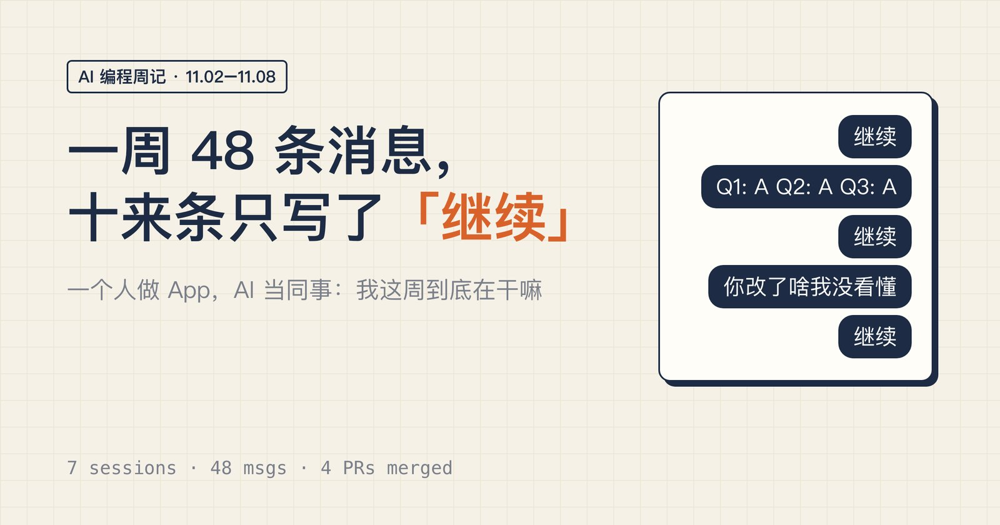

一个人加一个 AI 编程助手，一周做了什么：48 条指令的复盘
我用 AI 编程助手推进一款棋类学习 App 的一周复盘，讲六个可复用的做法：让 AI 先问清楚、把规则写进文档、用脚本防止漏改、看真实运行结果、给 AI 的错误设防线、管理上下文。

TL;DR：一周里我在 7 个会话里给 AI 发了 48 条消息，合并 4 个 PR，整理出 72 个设计状态帧和一套弹窗组件，新首页也上线了主分支。这周我自己写得最多的不是代码，是对 AI 提问的回答。下面是六个我会继续用的做法，每个都配了这周的真实例子。
我在独立开发一款棋类学习 App，工作区里有六个独立的代码仓库，加上一个设计文件。上周（11 月 2 日到 8 日）的工作分三条线：
- 把对局页的设计稿整理成组件化的状态帧
- 需求变更后重新划定三个月的范围
- 按新设计稿实现首页和练习页
我统计了自己发出的消息，48 条里有十来条只写了「继续」，还有好几条是「Q1: A Q2: A Q3: A」这种格式。真正的工作量花在了做决定和验收上。
做法一：让 AI 先拷问我
周一产品方向变了，原来的计划作废，改成春节前完成四个模块。我把新需求交给 AI，它的第一句话是：
现在不要开始写代码。先把这次需求变更正式“止血”和定边界，否则首页很可能被后续返工。
接下来一天半里它问了我 22 个问题，每题都给了选项和它推荐的答案。我按编号回答，一般一句话就够了。
这种问答比我自己写需求文档好用，原因是 AI 会把我前后矛盾的地方翻出来：
- 同一段回答里，我既说「练习页要能跳到小游戏列表」，又说「暂不实现这个跳转」——如果没发现：实现出来的大概率不是我要的那个
- 我给的设计稿节点编号指向的是一张任务卡片，不是游戏页面——如果没发现：照着错误的稿子还原页面
- 新设计稿画了 12 组关卡，后端题库只有 10 组——如果没发现：用两组假数据把设计稿撑满
可以照着做的：要求 AI 每轮只问 3 到 5 个问题，每题带编号、选项和推荐答案。你回答编号就行。
做法二：规则写进文档，AI 才能替你挑错
工作区根目录有一份写给 AI 读的规则文档，里面记着项目约定和以前踩过的坑。其中一条是：星级和奖励只能由服务端判定，客户端只上报原始数据。
周二 AI 检查对局页设计稿时引用了这一条。它指出「通关成功 · 三星」的弹窗排在「正在记录成绩」之前，也就是界面在服务端确认前就把结果告诉了玩家。它还指出失败的对局也要提交记录，因为后面要做错题本。
这两个问题我自己看稿时都没发现。AI 能看出来，是因为规则就写在它每次都会读的文档里。
可以照着做的：会影响以后工作的决定，当场让 AI 写进规则文档（AGENTS.md、CLAUDE.md 之类）。这样换会话、换模型，读到的约束都一样。
做法三：反复出错的事交给脚本
App 里有一份手抄的后端接口类型清单。两个仓库是分开的，后端改了接口，App 的清单得有人去同步。这件事之前已经忘过两次。
AI 给了四个方案：私有 npm 包、pnpm workspace、tsconfig 路径引用、维持手抄加自动检查，每个都写了代价。我选了最轻的最后一个，做了两样东西：
- 比对脚本：用 TypeScript 编译器把后端真实的路由类型和 App 的清单逐项对比，报告四类差异。
- pre-commit 钩子：后端提交的文件涉及接口时自动跑一次比对，耗时 1.5 秒，只警告，不拦提交。
可以照着做的：AI 交付的东西你得能复述出来。复述不了，就让它重讲。
做法四：验收看真实运行的结果
周三晚上我登录 App，看到的还是旧首页。原因是 AI 在一个 git worktree 里做的改动还没提交，我本机跑的是主分支，它截图用的是另一个进程，两边说的不是同一份代码。
之后我们走了正式流程：提交、开 PR、我审、合并。这周另外两个只在真实运行时才暴露的问题，也提醒我：AI 每次交付都会写明还没验证的部分。
可以照着做的：把「哪些还没验证」列为交付内容里必须写的一项。
做法五：AI 会犯错，提前设好防线
AI 在设计工具里批量生成弹窗时，把 12 个子元素甩到了画布下方 4000 像素处，因为它把相对坐标当成了绝对坐标。它是从一个数字上看出不对的：边界框有 1958×4775，而弹窗只有 292×244。之后它自己修好了。
可以照着做的：删除、覆盖这类操作，要求先移到归档区，确认没问题再删。判断以读到的数值为准，截图只做参考。
做法六：上下文会用完
周一晚上两个会话的上下文都快满了。我让 AI 把当前状态整理成一段交接说明，在新会话里接着做。交接说明的最后一句是「动手前先听新需求，不要默认沿用旧计划」。
可以照着做的：上下文用到八成左右就交接，交接说明让 AI 写、你来审。语言这类固定偏好写进全局配置，别每次手动提醒。
清单
- 需求有变化，先让 AI 出带推荐答案的选择题，你按编号回答。
- 会影响以后的决定，写进规则文档。
- 反复出错的事交给脚本，默认只警告、不拦截。
- 看真实运行结果，并要求列出没验证的部分。
- 不可逆操作先归档再删除。
- 上下文到八成就交接。